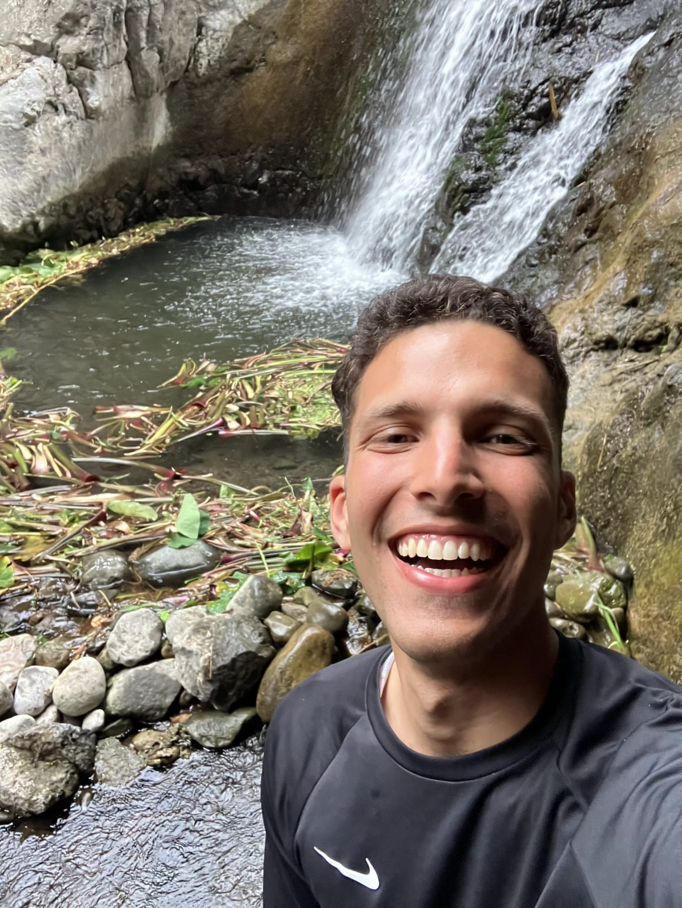

My name is Davi Freitas, and I'm from Rio de Janeiro, Brazil. My major is Software Engineering. I served my mission in Cape Verde and absolutely loved the experience. I was especially touched by the culture and the people—their smiles, their warmth, and their incredible willingness to give everything they have. One of the things I really enjoyed was the chance to connect with nature—it was such a blessing, even though Cape Verde is only truly "verde" (green) for about three months of the year! I'm also passionate about soccer and love talking about it anytime.